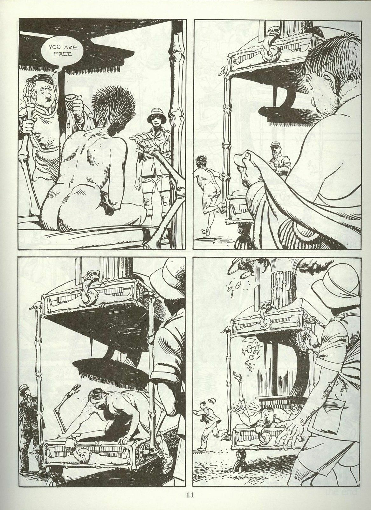
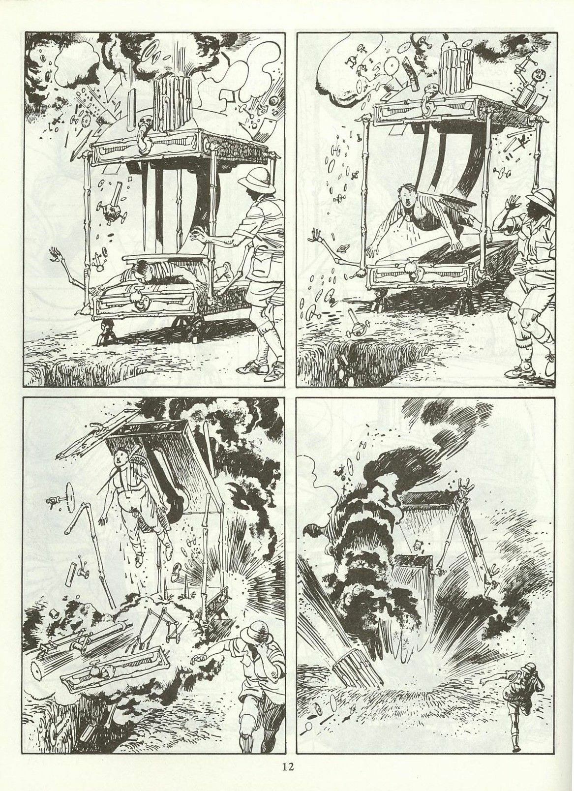
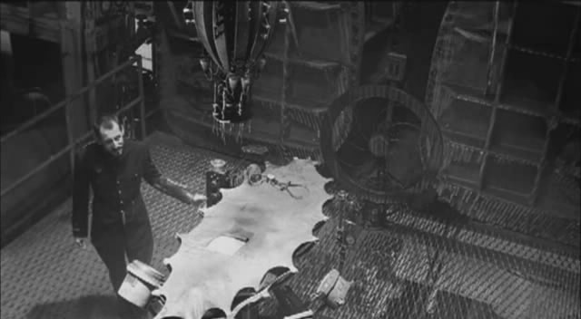
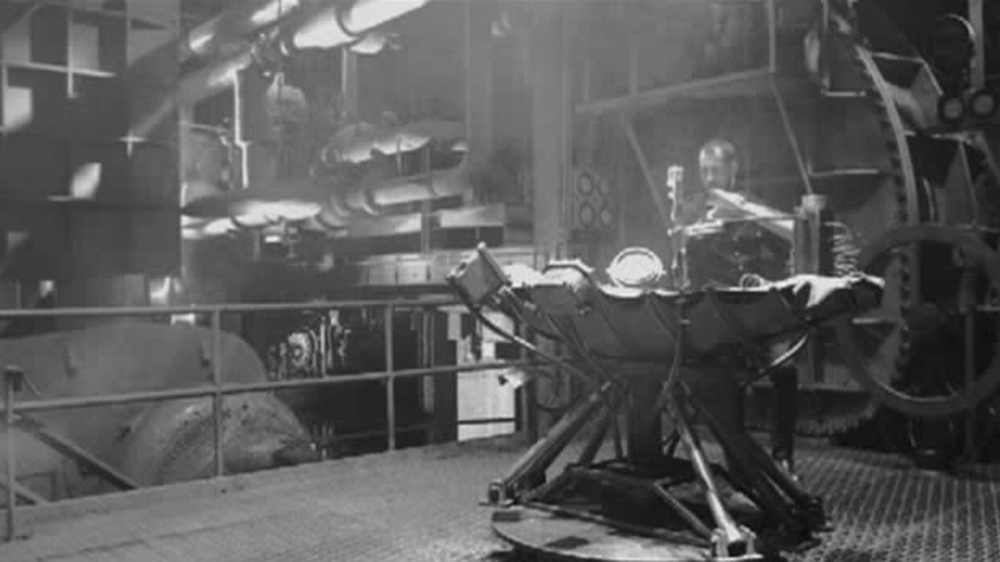

IN THE PENAL COLONY
this is a story by franz kafka written in 1914 about a traveller having the machanisms
and legacy of a torture device explained to him by an overly passionate man
you can read it here:
this is a story by franz kafka written in 1914 about a traveller having the machanisms
and legacy of a torture device explained to him by an overly passionate man
you can read it here:
i imagined it as more of a gyroscope
 kafka is a prominent theme in the 2015 game Resident Evil 2: Revelations for some reason.
you can see an intepretation of the machine here
1999 short film inspired loosely by the story, feel like it would be cool if i could see what the fuck was going on!
https://www.youtube.com/watch?v=j0M9wnBDDGk  i feel like nothing comes close to a real physical approximation of how i imagined the machine to be
its all a bit goofy really and i feel rather silly